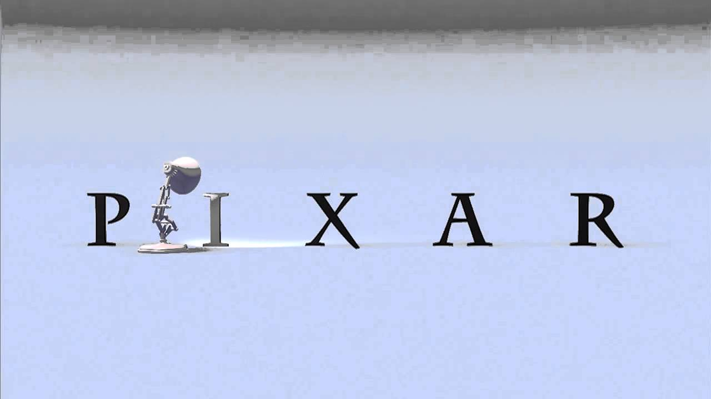
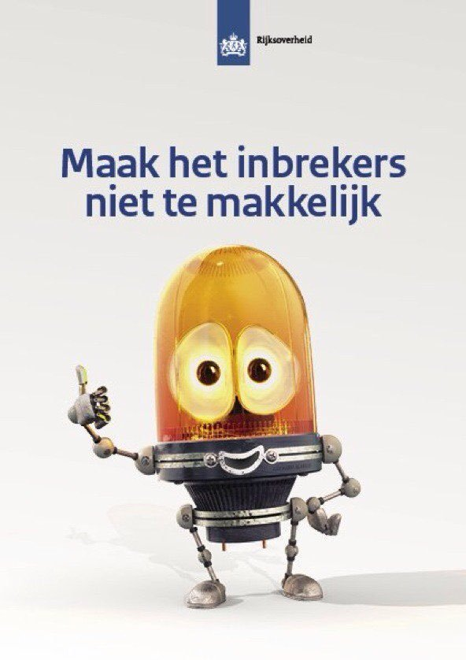
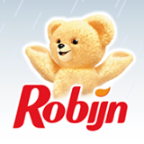
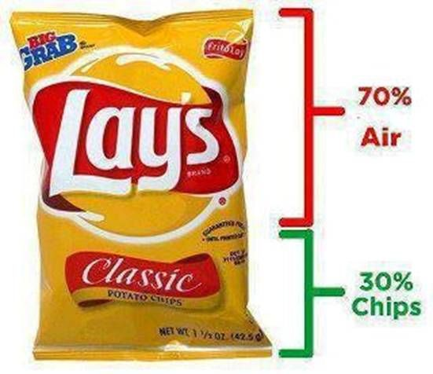
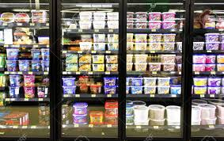

Venijnige verkooptrucjes van grote marketing bedrijven.
Van geheime boodschappen verstopt in slogans tot mascottes die jou beïnvloeden. De grote bedrijven hebben een aantal trucs in huis, waardoor jij altijd met meer naar huis gaat, dan je vooraf had kunnen denken. Hier zijn de grootste trucs waarmee grote bedrijven jouw koopgedrag controleren.
#1: Liegen op de labels.
Tegenwoordig zijn veel mensen bezig met het gezond eten. Daarom letten ze extra goed op de ingrediënten in producten via de etiketten. De meeste labels hebben hun ingrediënten gesorteerd op hoeveelheid. De meest voorkomende stoffen staan vooraan en de minst voorkomende stoffen achteraan. Nu hebben bedrijven ontdekt dat er meerdere namen toegewezen kunnen worden aan 1 stof. Of ze splitsen de stof op. Door deze technieken kunnen suikers en vetten worden verdeeld over meerdere namen. Als gevolg hiervan staan de suikers en vetten achteraan de lijst met ingrediënten. Hierdoor denkt de consument een gezond product te eten, terwijl dit niet het geval is. Wil jij wel weten welke ingrediënten goed zijn? Download de flyer van honestfoodguide.org/
#2: Misleidende uiterlijk.
Het heeft onze mensheid gecreëerd, maar toch weten bedrijven ons ermee voor de gek te houden. Als jij een reclame ziet van een fast-foodketen merk je gauw genoeg wat
ik bedoel. De burgers zien er fantastisch uit, maar als je er zelf eentje koopt is deze lang niet zo mooi als in de reclame. Dat komt, omdat de burger in de reclame is
bespoten met water. Hierdoor geeft het de burger een vers uiterlijk. Dit gebeurt niet in de restaurants zelf, want dan verrotten de burgers gemakkelijk.
In de supermarkten wordt er in de schappen juist wel aandacht gegeven aan het uiterlijk. De meeste supermarkten hebben een streng beleid als het om het uiterlijk van de
groente en fruit gaat. Ongeveer 30% van het geproduceerde voedsel komt niet terecht in winkels. Simpelweg, omdat het er niet mooi uitziet.
#3: Misleidende auto's.
Hetzelfde als het bovengenoemde is gaande in de auto-industrie. Auto's worden mooier gemaakt in reclames, dan dat ze echt zijn. Ze worden niet mooier gemaakt met een wasbeurt voor de opnames. Nee, ze worden mooi gemaakt in de computer. Het gaat zelfs zo ver, dat ze de auto's volledig op de computer maken. Ze nemen de reclame op met een soort auto, waar ze later de echte auto op zetten. Dit doen ze, zodat ze de reclames alvast kunnen opnemen, zonder te hoeven wachten tot de auto wordt vrijgegeven. Het bespaart voor de makers een hoop tijd, want ze kunnen eerder beginnen of een afgewezen reclame van een ander merk toepassen.
#4: Menselijke trekjes bij objecten.
Mensen houden ervan om menselijke eigenschappen toe te passen op objecten en dieren. Zo geven wij knuffels en huisdieren namen, schreeuwen wij tegen apparaten die niet werken of kijken wij massaal naar pratende auto's en vliegtuigen in films. Hoe dan ook, als mensen een menselijke eigenschap geven aan objecten en dieren, raken wij eraan gehecht. Zo krijgen bedrijven een betrouwbaar karacter. Voor bedrijven werkt het heel gunstig en ze maken er graag gebruik van. Denk bijvoorbeeld maar aan de lamp van Pixar, het beertje in de Robijn (wasmiddel) reclames of het lampje van de anti-inbreker reclame.
  #5: Omgekeerde psychologie.
Dit lijkt een beetje vreemd om te zeggen "Koop dit product niet!", maar sommige bedrijven die deze reclame techniek gebruiken, hebben veel succes. Volgens consumenten is het een teken van eerlijkheid en transparantie bij een bedrijf. Under Armour is een goed voorbeeld, zelf claimen zij een echte underdog te zijn. In werkelijkheid, zijn ze goede concurrenten van Nike en Puma.
#6: Het afleidingseffect.
Het afleidingseffect wordt toegepast als er een keuze is tussen 2 soortgelijke producten met soortgelijke prijzen. Het is voor de consument dan lastig om
een keuze te maken, maar als er 3de product bijkomt met dezelfde of mindere kwaliteiten en een hogere prijs dan is het makkelijker om voor het duurste uit de eerste 2 te
kiezen. Dit gebeurt veel bij technologische aankopen.
Een laptop met 750Gb kost €400,- en een andere laptop met 500GB kost €350,-. De overige specificaties zijn allemaal hetzelfde. Welke zou jij kiezen? De keuze is niet
makkelijk, want je moet kiezen tussen twee soortgelijke producten in dezelfde prijsklasse. Stel ik haal er een derde laptop bij. Deze laptop heeft 250GB en kost €500,-,
wel krijg je er een groter scherm bij en een snellere processor (1.2x sneller). Welke zou jij nu kiezen? Waarschijnlijk sneller voor de duurdere van de eerste 2.
#7: Te dure producten als eerste aanbieden.
Als jij wel eens naar een restaurant bent geweest, heb je vast wel eens naar het duurste product op de kaart gekeken en vervolgens een goedkoper gerecht gekozen.
Zelfs al was dit gerecht alsnog veel te duur. Dit heet verankeren van de prijs. Het houd in dat jij het eerste beetje informatie neemt als basis. Als je iets ziet dat
goedkoper is, wordt dit door jouw hersenen verwerkt als 'goede deal'. Het wordt vooral toegepast in de auto-industrie, waar de eerste auto's die jij te zien krijgt pittig
duur zijn. Vervolgens kom jij bij een goedkoper alternatief, deze is alsnog te duur voor wat het waard is, maar jij interpreteerd het als goede deal.
Een voorbeeld hoe je dit junt toepassen is door middel van een aanbieding als: Was €30,-, nu voor €24,-. Door als eerste te zeggen dat het product duurder was, zetje dat
als eerste informatie. Vervolgens zeg je de nieuwe deal en die lijkt dan een stuk beter dan de eerste, dan als je alleen zou zeggen dat deze €24,- was.
#8: Verminderde kwantiteit van producten.
Het is je vast wel eens opgevallen, dat er erg veel lucht in een zak chips zit. Dit komt doordat er de afgelopen jaren producten in minder grote porties worden verkocht. Dit lijkt goed te zijn gezien het feit dat een groot deel van de westerse wereld lijdt aan obesitas of overgewicht. Totdat je je bedenkt dat de prijzen niet zijn afgenomen in de zelfde mate als het product. Je krijgt dus minder product voor hetzelfde geld. Dit doen bedrijven om kosten te besparen. Zolang de verandering in prijs of kwantiteit niet meer of minder dan 10% is, merken de mensen niks van de verandering.
#9: De Gruen verplaatsing.
Genoemd naar de ontdekker van dit fenomeen. Hij heeft ontdekt hoe mensen het liefst winkelen en hoe bedrijven hier het meeste winst uit kunnen halen. Bijvoorbeeld: De meeste mensen zijn rechtshandig, het is dus nodig om tegen de klok in te lopen. Zo kunnen mensen hun karretje met hun linkerhand vooruit duwen en met hun rechterhand hun spulletjes pakken. Ook zijn de producten die elkaar aanvullen aan de andere kant van de supermarkt geplaatst. Hierdoor moet je de hele winkel door en is de kans groter, dat je iets koopt wat je niet van plan was. Ook afleiding speelt een rol in de Gruen verplaatsing. Als je wordt afgeleid door schappen die anders ingedeeld zijn of een medewerker, die vraagt, "Kan ik u helpen" of een intercom met een mededeling. Het zijn allemaal manieren om jou af te leiden. Door de afleiding vergeet je misschien wat je wilde kopen en koop je een product dat je niet nodig hebt.
#10: De ligging van de producten.
 Over elk product is nagedacht, waar het zou moeten liggen. De ligging heeft meestal te maken met leeftijd, budget of populariteit. Jij hebt vast wel eens gehoord, dat
de duurste producten op ooghoogte liggen. Dat klopt, maar weet jij ook dat de onderste schappen meestal zijn bedoeld voor kinderen? Kinderen zien namelijk makkelijker de
onderste kleurrijke producten en willen die dan kopen. De bovenste schappen zijn meestal bedoeld voor unieke producten, bijvoorbeeld streekproducten. De middelste schappen
zijn voor de populaire merken.
Ook is gebleken uit studies, dat de supermarkt karretjes bijna 3x zo groot zijn geworden sinds 1930. Dit heeft als gevolg dat mensen meer producten kopen om hun karretje
te vullen. Een andere studie zag dat als karretjes werden vergroot. Mensen tot wel 40% meer kopen.
Voor de volgende keer.
Voor de volgende keer als jij iets koopt, kun jij kijken of jij de trucs eruit kunt halen. Probeer er niet in te trappen. Jij weet waat je op moet letten. Of als jij een ondernemer bent, weet je nu hoe je nog meer uit je omzet kunt halen. Deel deze post via social media.